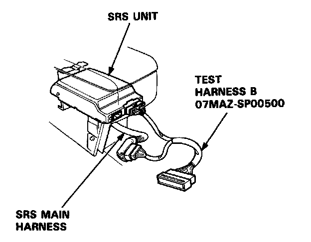
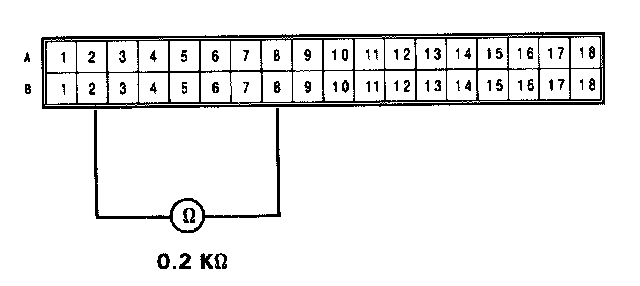
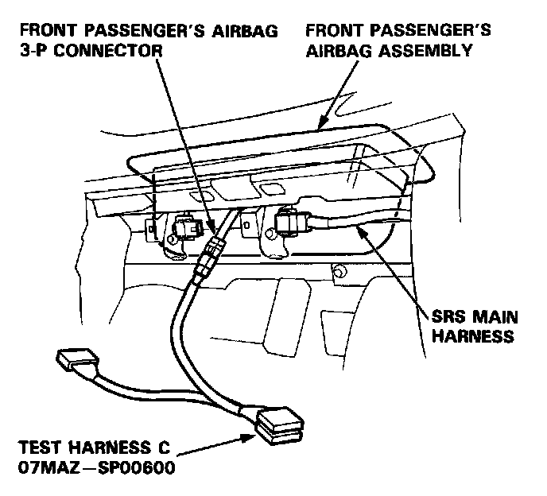
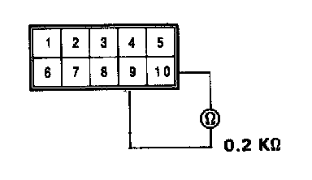

Failure Mode F
Mode F: Open in front passenger's airbag inflator.
NOTE: The original radio has a coded theft protection circuit. Be sure you get the code number before disconnecting the battery cables.
1. Before disconnecting any part of the SRS wire harness, disconnect both the negative and positive battery cables. Then install the short connectors - refer to "Short Connector Installation" procedure.
2. Connect Test Harness B between the SRS unit and the SRS main harness 18-P connector.

3. Reconnect the front passenger's air bag connector, then measure the resistance between the No.2 terminal and No.8 terminal.

- If resistance is more than 0.2K ohms, go to step 4.
- If resistance is less than 0.2K ohms, the SRS unit is faulty. Substitute a known-good SRS unit and recheck the voltages according to the chart in the "Indicator Stays On Continuously" procedure.
4. Disconnect the front passenger's airbag 3-P connector from the SRS main harness, then connect Test Harness C to the airbag side of the connector.

5. Measure the resistance between the No.9 terminal and the No.10 terminal.

- If resistance is more than 0.2K ohms, the front passengers airbag inflator is faulty. Replace the front passenger's airbag assembly and recheck the voltages according to the chart in the "Indicator Stays On Continuously" procedure.
- If resistance is less than 0.2K ohms, the SRS main harness is faulty. Replace the SRS main harness and recheck the voltages according to the chart in the "Indicator Stays On Continuously" procedure.